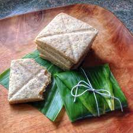

Lembas Bread

Description
Inspired by the Lord of the Rings trilogy, this Lembas Bread recipe is sweet and filling! Prep and cook time is approximately 30 minutes.
Ingredients
- 2 1/2 cups of all-purpose flour
- 1 tablespoon baking powder
- 1 teaspoon cinnamon
- 1/4 teaspoon salt
- 1/2 cup butter, softened
- 1/3 cup brown sugar, packed
- 1/2 teaspoons vanilla extract
- 2/3 cup heavy whipping cream
- 1/2 teaspoon honey
Steps
- Preheat the oven to 425 degrees Farenheit.
- In a large mixing bowl, whisk flour, baking powder and salt together.
- Add butter now and mix until fine granules form, then add sugar and cinnamon. Mix them thoroughly.
- Finally add the cream, honey and vanilla. Stir them until nice thick dough forms.
- Roll the dough out about 1/2 inch thickness evenly and cut out 3 inch squares onto a cookie sheet.
- Bake for about 12 minutes or more (depending on thickness) until lightly golden.
- Serve after cooled.